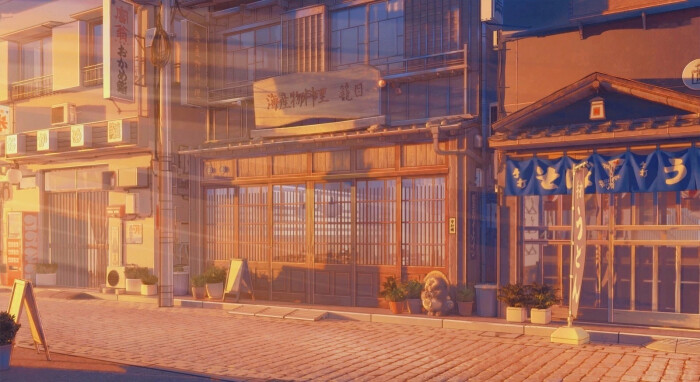
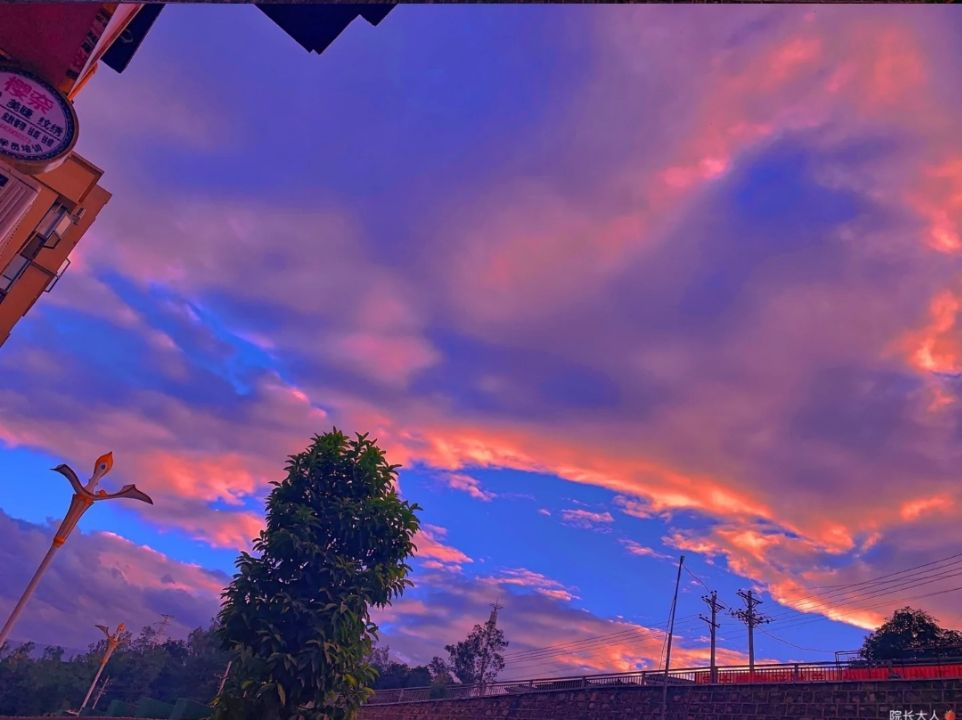
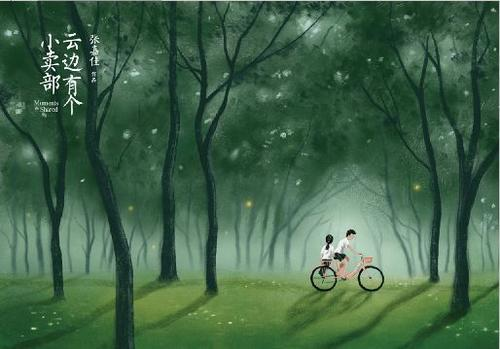
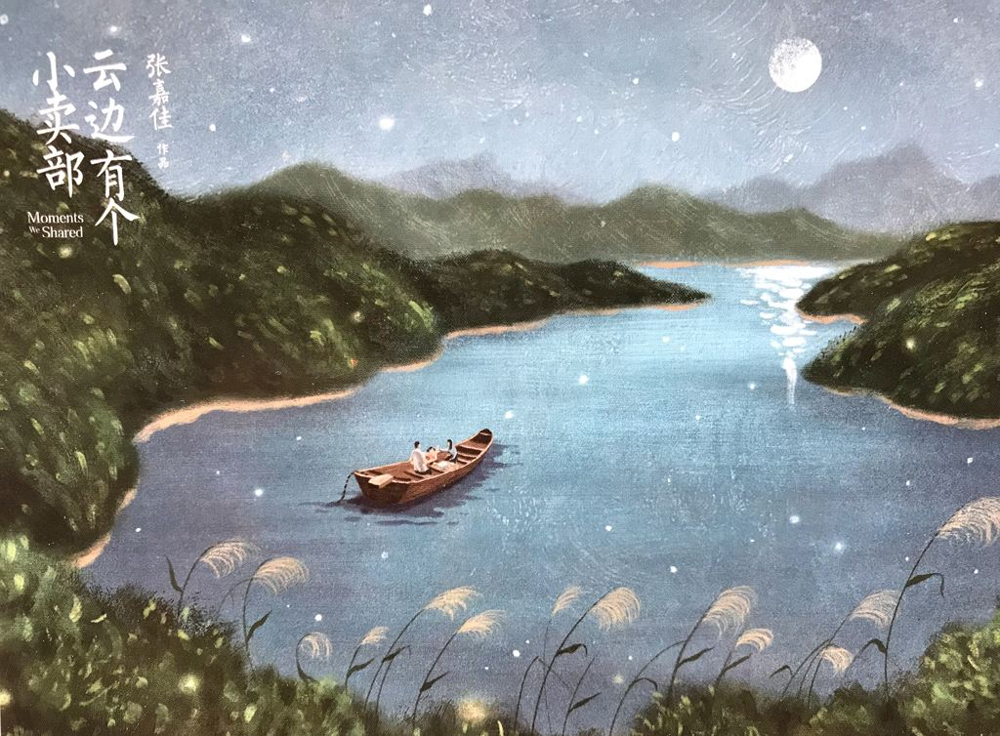

有些人刻骨铭心，没几年就遗忘。有些人不论生死，都陪在你身旁。
云边有个小卖部，货架堆着岁月和夕阳，背后就是山。老人靠着躺椅假装睡着，小孩子偷走了一块糖。
人们聚和离，云朵来又往。讲故事的人，总有一个故事不愿讲。时光飞逝，悄悄话变成纸张。
小女孩走近，笑吟吟望着一群土鳖同学。

她的笑很清爽，声音也好听：“大家好，我叫程霜。”像冰过的西瓜咔嚓碎了，脆凉脆凉，自大家耳边淌过。
刘十三就这样，看着小女孩像梦境一般，马尾辫，眉清目秀，向他走过来。
窗外蝉儿鸣叫，屋内扇叶转动，课文朗读声随风去向山林。
二〇〇三年的夏天，他们都是四年级。童年就像童话，这是他们在童话里第一次相遇。
树叶被风吹的轻晃，阳光破碎，蝉声隐匿，像远方的潮水。有朵盛开的云，缓缓滑过山顶，随风飘向天边。
刘十三悲愤道：“我说了我不是孤儿！你再胡说八道，我就要打你了！”

程霜把脸贴在他背上：“你不舍得打我，你喜欢我。不过你再喜欢也没有用的，因为我要死了。”
有朵盛开的云，缓缓滑过山顶，随风飘向天边，我们慢慢明白，有些告别，就是最后一面。
程霜接着说：“我生了很重的病，会死的那种。我偷偷溜过来找小姨的，小姨说这里空气好。”
程霜还说：“我可能明天就死了，我妈哭着说的，我爸抱着她。我躲在门口偷听，自己也哭了。”
程霜声音很低很低地说：“所以你不要喜欢我，因为我死了你就会变成寡妇，被人家骂。”
刘十三没有回应，因为背上一阵湿答答。

那么热的夏天，少年的后背被女孩的悲伤烫出一个洞，一直贯穿到心脏，无数个季节的风穿越这条通道，有一只萤火虫在风里飞舞，忽明忽暗。
刘十三紧张地鞠个躬：“阿姨好，我叫刘十三，程霜的朋友，想给她过生日。”
中年妇人微笑着看他许久，轻轻柔柔地说：“你就是她生前一直提起的刘十三啊。”
刘十三眼圈突然红了。
中年妇人说：“你不听话哦，她不是让你别找她吗？”她眼中泪光闪烁，“我跟她打赌，你一定会来，看来我赢了。”
“她给你留了东西。”程霜妈妈指着客厅中央挂着的画。
那幅画刘十三进门第一眼就看到了。

“最后几天她拼命画，她说，画的名字叫《一缕光》。我不明白这个名字的意思，她说你肯定明白。”
那是幅水粉画，矮矮院墙，桃树下并肩坐着两人。斜斜一缕阳光，花瓣纷飞，女生的头微微靠在男生肩膀上。
现实中他们没牵手。而画中的女孩，牵着男孩的手，阳光下的幸福美好到看不清。
画下方，用钢笔写了几行字，字迹娟秀，仿佛透着笑意：
生命是有光的。
在我熄灭以前，能够照亮你一点，就是我所有能做的了。
我爱你，你要记得我。
十三，失散；程霜，成双
两代人终归失散，一个人思念成双
来源：张嘉佳《云边有个小卖部》